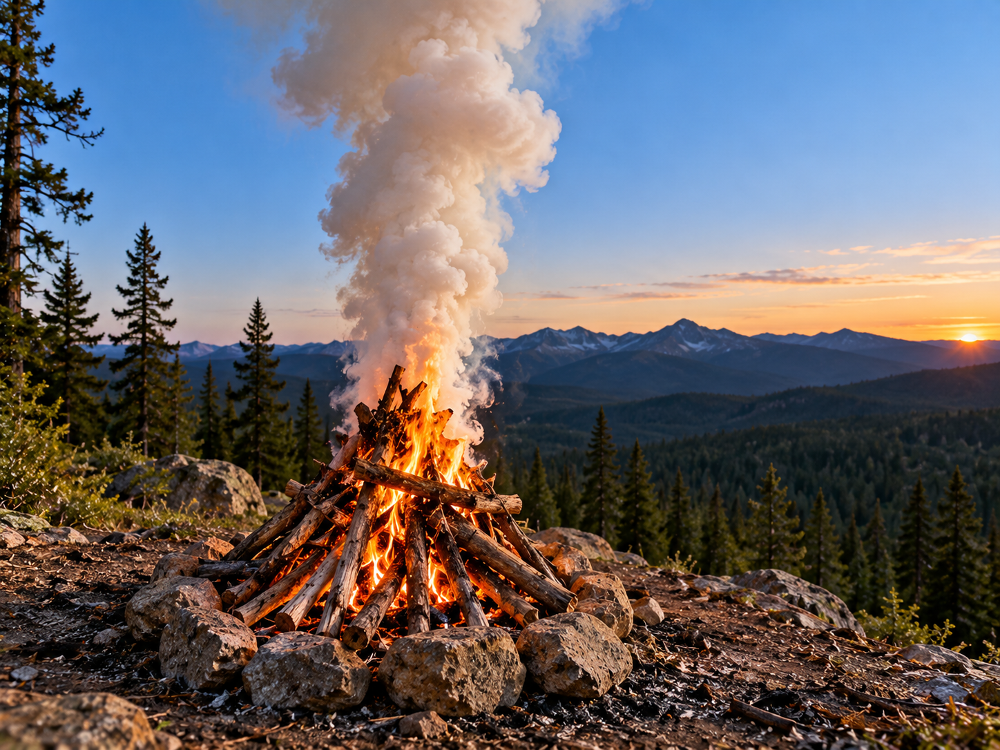

Signal Fire

A signal fire may help attract attention during an emergency where fire use is safe and legally permitted.
What It Is
A signal fire is intended to make a person's location more noticeable from a distance. The visible flame or smoke may attract attention.
When to Use It
It may be considered during an emergency when signaling for rescue is necessary and local conditions allow a fire to be used safely.
How It Works
The main purpose is visibility. A signal should be placed where it can be noticed without creating a wildfire or another hazard.
Materials Needed
- Safe fire area
- Dry fuel
- Safe ignition source
- Water or another way to extinguish the fire
Sources
Emergency signaling information: National Park Service - Ten Essentials
Fire safety information: National Park Service - Wildland Fire Safety